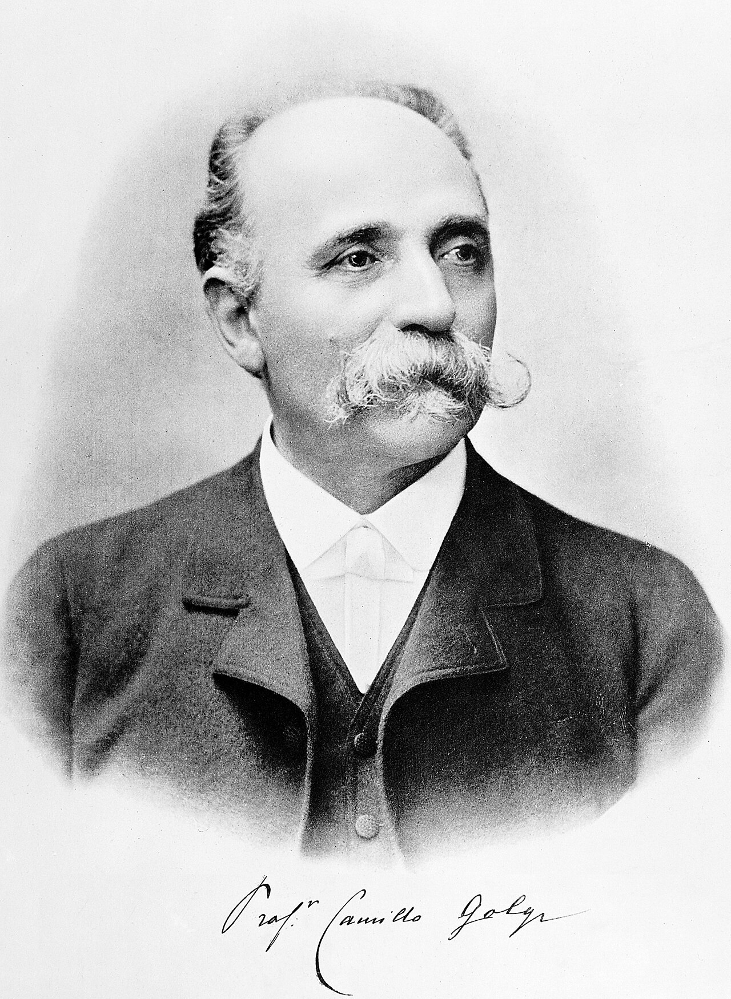

细胞器之间的分工合作（上）：细胞器之间的分工
本期导读
认识差速离心法分离细胞器，逐一掌握线粒体、叶绿体、内质网、高尔基体、溶酶体、液泡、核糖体、中心体和细胞骨架的结构与功能，并按四个维度归纳细胞器。
细胞器之间的分工合作（上） · 结构与功能

视频原话 · 导读3 句
- 同学们好！这节课梳理人教版必修一第三章第二节——细胞器之间的分工合作的上半部分：细胞器之间的分工。10.5s
- 高考常考各种细胞器的结构和功能，以及按膜、成分和分布给细胞器归类。7.2s
- 我们按八个考点梳理，每个考点都讲清楚怎么考、怎么做。5.5s
差速离心法01#
分离细胞器的方法是差速离心法。先破坏细胞膜，形成由各种细胞器和细胞中其他物质组成的匀浆。
再用逐渐提高离心速率的方法分离不同大小的颗粒：颗粒越大，越先沉降。
视频原话3 句
- 考点一，分离细胞器的方法——差速离心法。先破坏细胞膜，形成由各种细胞器和细胞中其他物质组成的匀浆。10.7s
- 再用逐渐提高离心速率的方法分离不同大小的颗粒：颗粒越大，越先沉降。7.2s
- 易错：差速离心是逐渐提高转速；要和证明DNA半保留复制用的密度梯度离心区分开。8.8s
线粒体02#
线粒体是细胞进行有氧呼吸的主要场所，是细胞的“动力车间”。
线粒体具有双层膜，内膜的某些部位向内腔折叠形成嵴，增大了膜面积。线粒体中含有少量的DNA和RNA，能合成一部分自身需要的蛋白质。
视频原话4 句
- 考点二，线粒体。线粒体是细胞进行有氧呼吸的主要场所，是细胞的“动力车间”。8.1s
- 线粒体具有双层膜，内膜的某些部位向内腔折叠形成嵴，增大了膜面积。7.4s
- 线粒体中含有少量的DNA和RNA，能合成一部分自身需要的蛋白质。6.9s
- 考法：代谢旺盛的细胞，如心肌细胞，线粒体多。易错：线粒体不能直接分解葡萄糖，进入线粒体的是丙酮酸。11.3s
叶绿体03#
叶绿体是光合作用的场所，是植物细胞的“养料制造车间”和“能量转换站”。
叶绿体也有双层膜，内部有许多基粒，每个基粒由一个个圆饼状的类囊体堆叠而成。类囊体的薄膜上分布着光合色素；叶绿体中也含有少量的DNA和RNA。
视频原话4 句
- 考点三，叶绿体。叶绿体是光合作用的场所，是植物细胞的“养料制造车间”和“能量转换站”。9.0s
- 叶绿体也有双层膜，内部有许多基粒，每个基粒由一个个圆饼状的类囊体堆叠而成。7.9s
- 类囊体的薄膜上分布着光合色素；叶绿体中也含有少量的DNA和RNA。7.4s
- 易错：植物细胞不一定都有叶绿体，如根尖细胞；能光合作用的也不一定有叶绿体，如蓝细菌。9.3s
内质网与高尔基体04#
内质网是由膜连接而成的网状结构，是蛋白质等大分子的合成、加工场所和运输通道。粗面内质网上附着有核糖体；光面内质网是脂质合成的场所。
高尔基体主要对来自内质网的蛋白质进行加工、分类和包装，是“车间”及“发送站”。
视频原话4 句
- 考点四，内质网和高尔基体。内质网是由膜连接而成的网状结构，是蛋白质等大分子的合成、加工场所和运输通道。11.6s
- 粗面内质网上附着有核糖体；光面内质网是脂质合成的场所。6.5s
- 高尔基体主要对来自内质网的蛋白质进行加工、分类和包装，是“车间”及“发送站”。8.0s
- 易错：高尔基体在植物细胞中与细胞壁的形成有关，在动物细胞中与分泌物的形成有关。8.6s
溶酶体与液泡05#
溶酶体内部含有多种水解酶，是细胞的“消化车间”。它能分解衰老、损伤的细胞器，吞噬并杀死侵入细胞的病毒或细菌。
液泡主要存在于植物细胞中，内有细胞液，含糖类、无机盐、色素和蛋白质等，可以调节细胞内的环境，使植物细胞保持坚挺。
视频原话4 句
- 考点五，溶酶体和液泡。溶酶体内部含有多种水解酶，是细胞的“消化车间”。7.8s
- 它能分解衰老、损伤的细胞器，吞噬并杀死侵入细胞的病毒或细菌。6.9s
- 液泡主要存在于植物细胞中，内有细胞液，含糖类、无机盐、色素和蛋白质等，可以调节细胞内的环境，使植物细胞保持坚挺。12.2s
- 易错：溶酶体的水解酶是在核糖体上合成的；花瓣、果实的颜色来自液泡中的色素。8.4s
核糖体中心体骨架06#
核糖体是“生产蛋白质的机器”，有的附着在内质网上，有的游离在细胞质中。
中心体见于动物和某些低等植物细胞，由两个互相垂直的中心粒及周围物质组成，与细胞的有丝分裂有关。
细胞骨架是由蛋白质纤维组成的网架结构，维持细胞的形态，锚定并支撑着许多细胞器。
视频原话4 句
- 考点六，核糖体、中心体和细胞骨架。核糖体是“生产蛋白质的机器”，有的附着在内质网上，有的游离在细胞质中。11.7s
- 中心体见于动物和某些低等植物细胞，由两个互相垂直的中心粒及周围物质组成，与细胞的有丝分裂有关。9.9s
- 细胞骨架是由蛋白质纤维组成的网架结构，维持细胞的形态，锚定并支撑着许多细胞器。8.7s
- 易错：细胞骨架的成分是蛋白质，不是纤维素；高等植物细胞没有中心体。7.6s
细胞器的归纳07#
双层膜：线粒体、叶绿体；无膜：核糖体、中心体；其余是单层膜。
| 归纳维度 | 细胞器 |
|---|---|
| 双层膜 | 线粒体、叶绿体 |
| 无膜 | 核糖体、中心体 |
| 含核酸 | 线粒体、叶绿体含DNA和RNA，核糖体只含RNA |
| 含色素 | 叶绿体和液泡 |
| 分布 | 叶绿体存在于绿色植物能进行光合作用的细胞中；液泡主要存在于植物细胞中；中心体见于动物和某些低等植物细胞 |
视频原话4 句
- 考点七，细胞器的归纳。双层膜：线粒体、叶绿体；无膜：核糖体、中心体；其余是单层膜。10.2s
- 含核酸的：线粒体、叶绿体含DNA和RNA，核糖体只含RNA。7.2s
- 含色素的：叶绿体和液泡。叶绿体存在于绿色植物能进行光合作用的细胞中，液泡主要存在于植物细胞中；中心体见于动物和某些低等植物细胞。13.9s
- 解题方法：按膜层数、含核酸、含色素、分布四个维度列表记忆，题目问哪个维度就查哪一列。9.4s
观察叶绿体实验08#
观察叶绿体和细胞质的流动，常用藓类的叶或黑藻的叶，叶片薄，可以直接制成装片。用菠菜叶时，要撕取稍带些叶肉的下表皮，因为靠近下表皮的叶肉细胞中，叶绿体大而数目少。
观察细胞质的流动，以叶绿体的运动作为标志；临时装片要随时保持有水的状态。
视频原话4 句
- 考点八，用高倍显微镜观察叶绿体和细胞质的流动。常用藓类的叶或黑藻的叶，叶片薄，可以直接制成装片。11.0s
- 用菠菜叶时，要撕取稍带些叶肉的下表皮，因为靠近下表皮的叶肉细胞中，叶绿体大而数目少。9.3s
- 观察细胞质的流动，以叶绿体的运动作为标志；临时装片要随时保持有水的状态。7.8s
- 易错：视野中细胞质环流的方向与实际方向相同；观察叶绿体不需要染色。7.7s
易错速查✓
先自己判断，再点按钮查看对错与解析。
- 1差速离心法是逐渐降低离心速率说法错误：是逐渐提高离心速率
- 2线粒体能将葡萄糖彻底氧化分解说法错误：葡萄糖先在细胞质基质中分解为丙酮酸
- 3植物细胞都含有叶绿体说法错误：根尖细胞等没有叶绿体
- 4溶酶体中的水解酶由溶酶体自身合成说法错误：水解酶在核糖体上合成
- 5中心体和核糖体都没有膜结构说法正确。
- 6视野中胞质顺时针流动，实际也是顺时针说法正确。
膜层数、核酸、色素、分布，四个维度来归纳！
视频原话 · 易错速查5 句
- 最后，用六道判断题检验一下。3.6s
- 判断一？错，是逐渐提高转速。判断二？错，进入线粒体的是丙酮酸。8.5s
- 判断三？错，根尖细胞就没有叶绿体。判断四？错，水解酶在核糖体上合成。9.0s
- 判断五？对。判断六？对，环流方向不变。6.0s
- 八个考点串成一条线：膜层数、核酸、色素、分布，四个维度归纳细胞器。我们下期再见！9.5s
图片来源
图片来源：Wikimedia Commons —— 《Camillo Golgi》Public domain
Camillo Golgi, Public domain